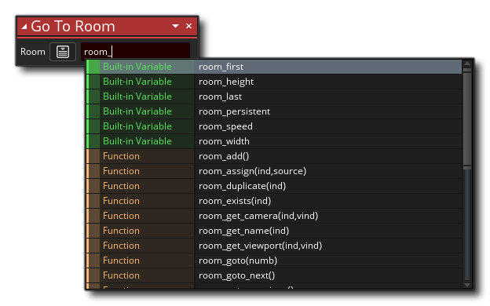
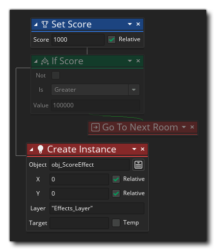

Para agregar comportamientos a los objetos, puede construir su código usando Acciones de las diferentes bibliotecas disponibles desde Action Toolbox. Para empezar se necesita para hacer una nueva arrastrar y soltar proyecto y luego hacer un nuevo objeto (se puede asignar un sprite de que el objeto también si es necesario). En su nuevo objeto puede comenzar a agregar eventos, y en los eventos agregar sus acciones de código DnD ™. 
Tenga en cuenta que cuando agrega un nuevo evento, se abre una ventana de "código" con una pestaña para el evento dado (vea la imagen anterior), y ahora puede arrastrar cualquier acción que desee de Toolbox a la derecha al panel Bloque de Acción de la ventana de código. Ahora, si bien es cierto que puede agregar cualquier acción, eso no significa que todos funcionarán o que el proyecto compilará con ellos. Algunas acciones requieren que las Variables funcionen, mientras que otras, como las acciones de Dibujar, solo funcionarán si se usan en un evento específico. ¿Cómo sabes cuáles usar? Bueno, en general, se trata simplemente de usar la lógica... si una acción requiere una variable y aún no hemos definido una, entonces no deberíamos usarla hasta que hayamos agregado una acción para crear la variable.
Cuando arrastra una acción desde la Caja de herramientas al espacio de trabajo principal del Bloque de acciones, se expandirá para mostrarle los parámetros disponibles (argumentos) que puede completar y cambiar para establecer el comportamiento. En la imagen siguiente, hemos arrastrado una acción Asignar variable de la biblioteca Común de Toolbox al espacio de trabajo del bloque de acción: 
Puede ver que la nueva acción también se muestra a la izquierda de la ventana de código en forma abreviada. Se puede hacer clic en esta lista de acciones, llamada Descripción general de la acción, para navegar rápidamente hacia esa acción para editarla. Puede continuar agregando acciones al evento si lo necesita, con cada acción nueva "encadenada" a la anterior para mostrar el flujo del código DnD ™ que está construyendo. Tenga en cuenta que el área donde puede soltar más acciones se resalta debajo de la acción inicial y, dependiendo de la acción que esté utilizando, se resaltarán diferentes áreas para mostrar en qué parte de la cadena puede agregarla: 
A medida que agrega acciones al área de trabajo, se "encadenarán" a las acciones anteriores para que pueda ver cómo fluye el código DnD ™, con una acción que conduce a otra, y el panel de resumen las muestra en forma abreviada y en orden de ejecución: 
Algunas acciones colocarán el código en una cadena separada del flujo principal; cosas como si se creará una subcadena de acciones que debería ocurrir si se cumplen las condiciones correctas antes de continuar con la cadena principal: 
Tenga en cuenta que al usar acciones que pueden tener un bloque de cadena lateral como este, la acción tendrá dos áreas resaltadas para descartar otras acciones: una debajo de la acción como normal y otra a la derecha de la acción para mostrar que desea crear una bloque de acciones separado para ejecutar cuando la condición de la primera acción regresa true: 
Puede cambiar la posición de las acciones dentro de la cadena simplemente haciendo clic  y arrastrándolos a la nueva posición que necesita, y si hace un clic y lo mantiene pulsado durante un segundo y luego mueve el mouse, puede mover la acción dentro del espacio de trabajo mientras mantiene su lugar dentro de la cadena de bloques de acción.
y arrastrándolos a la nueva posición que necesita, y si hace un clic y lo mantiene pulsado durante un segundo y luego mueve el mouse, puede mover la acción dentro del espacio de trabajo mientras mantiene su lugar dentro de la cadena de bloques de acción.
Esa es la base del uso del editor de código Arrastrar y soltar, pero hay más detalles importantes explicados en las siguientes secciones:
Es importante tener en cuenta que muchas acciones ofrecen una variable "objetivo", que se puede marcar como "Temporal", por ejemplo:
Lo que esto significa es que puede suministrar una variable "objetivo" que contendrá el valor devuelto por la acción. En la acción de ejemplo anterior, la acción devolverá el volumen del recurso de audio que seleccione, por lo que le proporcionará una variable de destino para mantener este valor para que pueda consultarlo más adelante. Ahora, esta variable objetivo deberá haberse declarado previamente utilizando Asignar variable (que crea una Variable de instancia ) o Declarar variable temporal (que crea una Variable temporal local ), pero si marca la opción "Temp", entonces puede simplemente agregue un nombre de variable y la acción creará esa variable y la establecerá para mantener el valor de retorno para usted (creando una variable local temporal). Cualquier acción utilizada después de esto ahora puede acceder al valor en la variable temporal, pero solo dentro del mismo evento o secuencia de comandos. Las variables temporales solo están disponibles dentro del alcance que se crearon. Para obtener más información detallada sobre las variables y el alcance de la variable, consulte aquí.
No solo las variables tienen ámbitos (ver Variables objetivo, arriba), las acciones también pueden tener diferentes ámbitos. De hecho, a casi todas las acciones se les puede dar un alcance diferente para trabajar, establecidas desde la ventana desplegable abierta en la acción en sí, como se muestra aquí:
También puede establecer el alcance para todas las acciones posteriores utilizando la acción especial Aplicar a. Para obtener más información sobre esta característica de las acciones de DnD ™, consulte aquí:
Cuando trabaje con Arrastrar y soltar, deberá agregar variables y expresiones en los diferentes campos de entrada de las acciones. Sin embargo, al hacer esto, a menudo aparecerá la ventana Autocompletar para ayudarlo a: 
Esta ventana emergente mostrará una lista de todas las variables, constantes y funciones integradas en GML (lenguaje de GameMaker ), así como cualquier recurso que contenga las letras iniciales de lo que estaba escribiendo. Se puede usar para encontrar rápidamente el recurso o la variable que desea para la acción sin tener que escribir todo en usted mismo. Por ejemplo, si todas sus habitaciones tienen el prefijo "rm_", al escribir eso y esperar un momento, se mostrará la ventana de autocompletar con todos los recursos que comienzan con "rm_". Tenga en cuenta que todas las variables integradas que se muestran en la ventana de autocompletar se pueden usar en cualquier lugar donde se espere una variable o expresión en una acción, como lo hacen la mayoría de las funciones GML.
Algunas veces, al usar una acción, verá un pequeño ícono más
por el lado. Esto significa que puede expandir la acción para realizar tareas adicionales o tomar más argumentos. Por ejemplo, si observa la acción Declarar Variables Temporales, puede ver que tiene esto
Al hacer clic en el ícono, la acción se expandirá y le permitirá declarar más variables, por lo que es más fácil y rápido definir múltiples variables al mismo tiempo.
El ícono también se puede usar para aquellas acciones que requieren argumentos opcionales, como la acción Elegir, que le permite agregar varios valores diferentes para ser devueltos:
Cuando trabaje con su código DnD ™, puede hacer clic con el botón derecho del mouse
en la acción (o en el texto en la lista breve de la izquierda) para abrir el siguiente menú:
Este menú tiene las siguientes opciones:
- Cortar / Copiar / Pegar: Esto le permitirá cortar, copiar o pegar cualquier acción que esté seleccionada. Tenga en cuenta que puede usar
+
fuera de las acciones y arrastre, o use
/
+
- Deshabilitar: este comando desactivará la acción (o acciones) seleccionada. Cuando una acción está desactivada, todavía es visible en el área de trabajo, pero no se ejecutará cuando compile el juego. De esta forma, puede agregar / eliminar acciones para probar y depurar. La imagen a continuación muestra algunos códigos DnD ™ con acciones deshabilitadas:  Puedes ver que las acciones " If Score "y" Go To Next Room "han sido desactivados y se saltearán cuando el juego sea probado o compilado".
- Alternar punto de interrupción: este comando activará o desactivará un punto de interrupción para la acción seleccionada. Un punto de interrupción es simplemente un punto en el código DnD ™ donde el depurador debe detenerse cuando el juego se ejecuta en Modo de depuración. Se resaltará una acción con un punto de interrupción asignado, como se muestra en la imagen a continuación (el " If Health "acción se ha establecido como un punto de interrupción):
- Panorámica: al seleccionar esto se desplazará y ampliará el área de trabajo para enfocarse en la acción seleccionada.
- Mostrar ayuda...: esta opción abrirá el manual en la página asociada con la acción DnD ™ que está actualmente seleccionada para que pueda verificar cómo funciona.